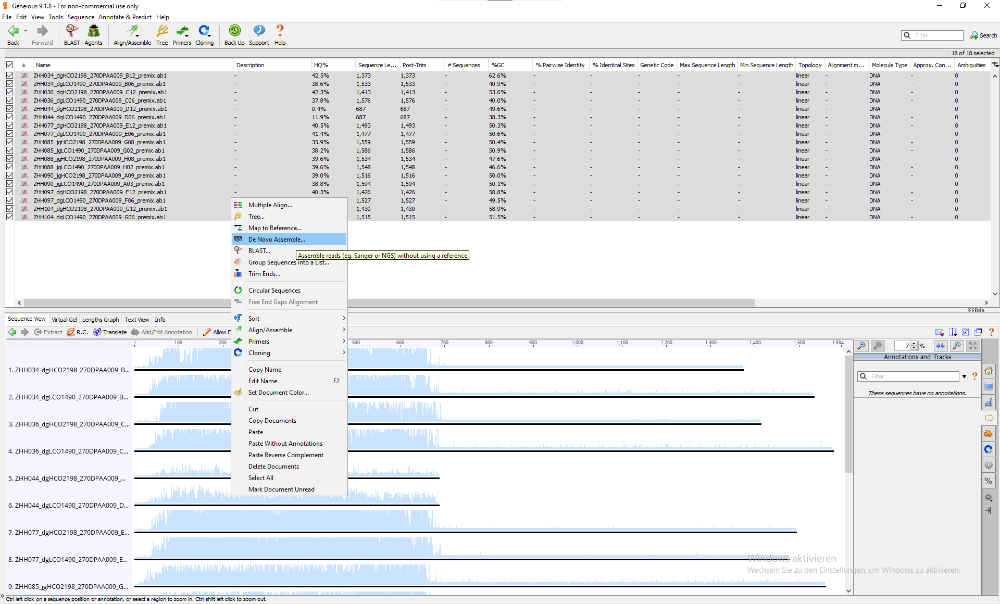

7 Sanger Sequence Assembly
How does Sanger Sequencing work?
Macrogen EZSeq and Eurofins Lightrun both return sequences in ab1, phy, pdf and txt file. txt file is the facility-exported sequence but considering how shitty the sequences sometimes can be, I never look at them because I need to manually assemble the sequence anyway. phy file is to me some ancient file type that none of my workflows use. Macrogen also returns pdf files with chromatograms, it’s wonderful to screen through to have a quick idea of whether the sequencing reaction went well or not. But the only file type that I am really interested in is the ab1 file, also called the trace file, consider it as the “raw” data that contains the unedited information.
But be careful, only the ab1 files from the sequencing facility (so those created by Applied Biosystems) are the real ab1 files. So yes, there are secondary generated fake ab1 files, such as those you can download from BOLD project as “original trace”. They work mostly fine, but programs with stricter protocols (such as sangeranalyseR package) might find unwelcome characters and throw stubborn errors.
I have tried to reduce the manual part in the workflow as much as possible, even to make it completely automated, but it turns out to be almost impossible, or it would sacrifice the integrity of our work. There must be a graphical interface at some point for us to check and manually edit the sequence because the various errors generated by low sequencing quality are not rare cases, but rather normal scenarios. Making an error-solving program was not very feasible since there’s always some surprise that can break generalized functions, and coding specialized functions makes no sense to me because then why not manually check them?
My group currently uses Geneious, but you have to pay (quite some money) for most of the features (starting from the next section). I am sure there are alternative programs out there but I didn’t have the time to find the whole suite that can replace Geneious without making me spend double the time on the same task. So consider paying for Geneious seems not a bad idea.
7.1 De novo assembly
Some terminologies first, each sequencing reaction produce a trace file, which contains the raw fluorescence signal intensity (electrophoretogram, also called chromatogram) and the interpreted DNA sequence, they are continuous until reaching a point no interpretation can be made due to low SNR (signal-noise-ratio), and this is one read, it always goes from 5’ end to 3’ end. Reads can overlap with each other, so if we align them and produce a longer sequence, it becomes a contig, contigs are continuous too. Everything beyond contigs (e.g., scaffolds) will become part of genome assembly.
In barcoding, there are two main ways to assemble reads into contigs. If the sequencing reads have a lot of overlap (e.g. in COI, both reads were essentially sequencing the same region), we can reconstruct the contig by only using the sequences at hand, and it’s called de novo assembly.
7.1.1 Import and assemble
Once the files are imported into Geneious, they are shown as sequencing reads.
{kind=link}
Opening individual files will show their chromatograms:
{kind=link}
The assembly function is very simple, select reads from the same sample, right-click > De Novo Assemble…
But you get extra award if you name your files in a reasonable and consistent format, for example, mine is “<sampleName>_<primerName>_<sequencingRunInfo>” (and no extra underscores in my sample or primer name). The benefit is that you can simply select all reads and tell Geneious how to group them by samples following the naming rules.

{kind=link}
{kind=link}
{Reads Name}We do not let the assembler trim the reads as we will do it manually later, and we want the assembly to be saved as contigs. The others can stay as the default. A report will be generated, and you might see that some sequences with low quality reads from both direction failed in generating contigs.
{kind=link}
{kind=link}
Opening one of the assembled contig, you see that the two reads are overlapping at the head region (5’) of each read, meaning that they match (align) with each other in that region. Which is logical for our COI barcoding, because both reads were sequencing the same fragment, but the opposite strands.
{kind=link}
7.1.2 Extracting the contig
Enlarging the view shows us that both reads are still treated as traces, and this is why we only ab1 file. The concensus base calls shown at the top are also marked with quality measurement, and it accounts quality measurements directly from the chromatograms.
{kind=link}
At this view, we will select the region where a good consensus can be calculated. Make sure to select both reads, and we would extract selected regions into a new file.
There are no hard thresholds or rules defining from where to where should be selected, the main idea is to select a region with acceptable base call qualities. So in the previous screenshot, I persoannly would start from position 798, and in the following screenshot I would stop at position 1433. The reason is that from 798, the consensus base calls are becoming higher (although there two inserted ambiguities, but they are resolvable, see Section 7.1.3.2) and from 1433, the quality drops rapidly, not only because the upper reads ended, but the quality of the lower reads dropped too.
{kind=link}
Then we can right-click the selected region > Extract Region …, make sure to extract region as contig too, so the reads are still treated as traces.
{kind=link}
7.1.2.1 How to select the extracting region?
Generally, I avoid including too many base calls with low confidence in consensus (those with dark blue color), except they are resolvable (e.g., due to a shift of one certain base in chromatogram, or the signal of a position “leaks” into its neighbours, etc.). Sometimes determining whether a low base call quality is a resolvable artefact or not requires thorough understanding of how the chromatogram was generated and what could possibly happen during the process. It is not possible to cover all chromatogram pattern you might see, but if you understand how those signals were produced, you would then be able to resolve obvious technical flaws and identify errors that can’t be resolved.
A typical example of such thinking is that if there was a quality drop (individually or continuously) within a homopolymer or tandem repeat (e.g., TTTTTTTT, CGCGCGCG) near the start or the end of the contig (without validation from the reverse-complement read), it’s better to exclude the whole repeat region rather than keeping it. Because if any signal shifts in those bases happens, it’s almost impossible to verify and determine the exact number of repeats when the both neighbouring positions have the same base, because shifted, leaked, or merged signals produce the same look. Of course, if you have already read Section 7.1.3.2, you might notice that in some cases, you can actually verify and resolve them (very closely related taxa and enough number of sequences, target is protein-coding gene). It highlights that this decision process depends on quite a few aspects and also the goal of obtaining the information. It’s all about finding a balance between extracting as much information as possible and avoid as much junk information as possible.
If we go really deep into details, you will also start thinking whether resolving (struggling at) some base calls is actually worth the time, considering the potential of that base being a parsimony-uninformative site in your alignment, or amplifying the risk of introducing artificial error due to codon-bias, etc. So my philosophy in dealing with this step is: keep it consistent and reasonable, but also keep it simple. And I always choose short but clean reads over long but potentially flawed reads.
Extracting the contig reagion is essentially trimming the reads, but doing it after the de novo assembly gives us an advantages: sometimes the reads are not as good as the ones we’ve seen here, a big part of the reads might just get discarded by the trimming algorithm, but if we assemble them anyway, we can still get a pretty good (at least useful) result by cross-checking the ambiguities with the reads from the other direction:
{kind=link}
7.1.2.2 Removing artificial gaps
After extracting the contigs, we need to do some manual clean-ups. The first few bases of Sanger sequencing are always shitty, it’s because of the dye blobs. And these shitty signals confuse the assembler, which inserts gaps - into the consensus. They are purely artificial, so we have to remove them. It can be easily done by selecting the consensus (not the individual sequence) and deleting it. You will probably get a warning window telling you how to edit the sequence properly, so from now on you have to pay attention to the keyboard: do not type unconsciously. Also remember to save your edits.
{kind=link}
We remove all the gaps in the consensus at the beginning and the end of the contig. You will see a red mark indicating deletion.
{kind=link}
Sometimes the gap is indicated as ambiguity N when the signal from the “shitty zone” somehow produced a good quality and convinced the algorithm that there might be something. But we know from the context and chromatogram that it’s still in the “shitty zone”, and it’s essentially the same as a - gap, so we delete them too.
{kind=link}
N instead of a gap - was inserted, but they are essentially the same hereYou might also find some other ambiguities in your contigs. We will deal with them later as we don’t have enough information to resolve them at this point.
{kind=link}
K (Keto, G or T) was inserted, as the assembler wasn’t certain which read to trust7.1.2.3 Optional: brush the contigs
After cleaning the gaps, there’s one last thing to pay attention to. Any idea what’s wrong with this contig?
{kind=link}
Left to the read file name, we see two marks: FWD and REV, stands for “forward” and “reverse”. We know that LCO1490 is the forward primer, and HCO2198 is the reverse primer - the direction marks are reversed in this contig, so we have to reverse-complement the entire contig to put it in the right direction.
{kind=link}
Some people do not do this step because many algorithms of multiple sequence alignment (MSA) nowadays can resolve the direction automatically, but they do not know how the gene should look like, and sometimes you would get a whole alignment of reverse-complemented sequence. I deliberately added “optional” to this section but I strongly recommend to do this. Skipping this step can become a time bomb if you want to check anything in detail later.
I couldn’t find any settings in Geneious where I might be able to specify the forward / reverse primer when performing the de novo assembly. If anyone knows, please do let me know. It seems quite surreal that software like Geneious doesn’t have that feature.
7.1.3 Assembly check
7.1.3.1 Building consensus and exploratory MSA
Since we have assembled the contig, we will make consensus sequences from the contigs. Right-click the checked contigs and run “Generate Consensus Sequence”.
{kind=link}
With the built consensus, we can then run a multiple sequence alignment (MSA) and compare the sequences with each other. Note: this is not the actual MSA step for subsequent analysis, it’s an exploratory step to check the assembly.
{kind=link}
There are several MSA algorithms to choose from. You may call me cult but I simply recommend MAFFT. Before the first use, you need to download the MAFFT plugin from Geneious to see the option. For our purpose now, we can leave all the parameters at the default. You can notice the difference in the placement of the sequences in the alignment view compared to just selecting all consensus sequences.
{kind=link}
Enlarging the alignment and chaging the display setting also let you see in details.
{kind=link}
7.1.3.2 Cleaning indels
From this point, you need to have a basic understanding of the Central Dogma of Molecular Biology, particularly how does a protein-coding gene become an actual protein.
Still remember the one inserted K from earlier? We can find that ambiguity in the alignment too. We see that the K only appears in one sequence and the positions in the rest are marked as gap -. These are not the gaps we forgot to clean, they are new gaps inserted by MSA algorithm, because the rest of the sequences align with each other better when this K is treated as an extra in its sequence. This is an insertion. It’s counterpart is deletion, where bases are missing comparing to others. Insertions and deletions are called together as indel. In this example, the insertion happens to be am ambiguity, but it can also be a well-supported base just like the others.
Indel naturally happens in sequence evolution, but rarely in this fashion. COI (cytochrome oxidase subunit I) gene is, as the name already says, a protein-coding gene, which means the nucleotide sequence has reading frames (read by tRNA). And the reading frames of the eukaryotic lifeforms on this planet (most, if there are exceptions that I don’t know of) are all triplets, i.e., every three bases are translated into one amino acid. That means a 1-bp insertion will mess up all the downstream translation, we call such an insertion a “frameshift” mutation (indels with length that is not a multiple of three). This will result in a huge change in protein functionality that most certainly comes with enormous selection forces, especially for protein like COI. Cytochrome oxidase is a key component in the respiratory chain reaction, and if a cell can’t breath, it dies. So the COI must work, from gene to protein. Simply put, such indels can happen, but the selection pressure will likely make it hard to survive and amplify. To prove such an insertion is real, multiple lines of evidence are required to explain and support it.
{kind=link}
Given that our insertion is ambiguous, we can be very certain that it is an artefact. By selecting the base, the information shown in the bottom left corner tells you where to find the base, so we go back to the traces and find base 597. According to the alignment result, there should be no base at the position, but you might wonder why: the quality of the lower read says it’s okay. But if you look just 2 base to the right (position 599), you see another G with a quality of not okay. That G supports an explanation, that one G (likely the last one) of the three continuous G is extra, possibly due to a “leak” of the leading G signal, or an error during the amplification process.
In this particular scenario, I would just exclude everything starting from position 599, because it already shows that errors start showing up and the quality of subsequent bases are not very nice either.
{kind=link}
Now we will repeat the process of generating consensus and run the MSA again, to confirm that the insertion is gone. If there are other indels, use the same method to resolve them. If you can’t resolve an indel, either something went really wrong, or it’s a real biological indel. For both case, I would suggest re-sequence it (with new PCR product), or investigate further if it persists.
But I have never encountered such scenario yet, and again, a frame-shifting indel in COI is very hard to imagine, then you might want to check the translation too.
{kind=link}
When there happens to be any artificial deletions, you can check the source traces to see if two or more peak signals were merged into fewer bases, then you can add the merged bases back manually. If not, the safest way is to change the gap - to ambiguity N, which stands for anything. By doing that, we tell everyone (and every algorithm) reading the sequence, that we think there is something at the position, but we don’t know exactly what (hence anything). If the other sequences all have the same base at the site, some people might also change the deletion to the consensus instead of N. However, doing so would bring nothing, or even flaws. Existence of a 100% consensus means the site is completely parsimony-uninformative. So I recommend leaving them as N, because for most of the time, we do not have any actual support for filling a gap using consensus from other sequences.
7.1.3.3 Checking the reading frame
After checking the indels, we also have to verify the reading frames. Changing the display option allows you to have a nicer view of the amino acid translations of our sequences. Note that you need to select the correct genetic code, which is the table 5 for my lovely isopods.
{kind=link}
The detailed sequences are not particularly interesting to us at this point, but one thing is: the stop codon, which terminates the translation process. A functional COI gene will not have any stop codons in between. So if a sequence has one, it’s not the gene we want, very likely a pseudogene. In that case, you have to remove it (the entire sequence). I noticed that it is also important to check this on GenBank sequences that you intend to include in your analysis, because I have found multiple of them actually having stop codons despite being registered as COI genes (maybe noted as unverified, though).
Of course, if you think one step further, you will realize that excluding stop codons does not fully exclude pseudogenes, because recently formed pseudogenes might not yet have introduced stop codons into themselves. It is a recognized problem in DNA barcoding, and it’s not very easy to identify those pseudogenes if they haven’t accumulated stop codons. Thic could be something you’d like to keep in mind in the later analysis, when something really odd comes up. More to read:
- Many species in one: DNA barcoding overestimates the number of species when nuclear mitochondrial pseudogenes are coamplified
- Do pseudogenes pose a problem for metabarcoding marine animal communities?
- “COI-like” Sequences Are Becoming Problematic in Molecular Systematic and DNA Barcoding Studies
If your alignment has stop codons everywhere, don’t panic. It’s probably just translated in the wrong frame. A sequence has six frames, as the tRNAs recognize triplets and we have two strands. But since we have ensured that our sequences are in the right direction during earlier steps, you must find a frame without any stop codon in the first three (non-reverse) frames. Or it might indicate that the naming of your trace files is reversed or there are other serious problems (which I haven’t yet encountered).
{kind=link}
7.1.3.4 Checking the ambiguities
According to the translation result, sometimes it seems possible to resolve some ambiguities. The idea is to choose a base from the available signals (such as between C or A for M) that produce a translation product matching the other sequences. My general recommendation is don’t. The reason is the same as filling a deletion based on the consensus. It reduce the risk of introducing artificial error, but it also eliminates the possibility of accounting for the uncertainty due to technical reason properly in the subsequent analysis. And again, it might not bring much anyway.
7.1.4 Export
Once we have checked that the sequence is clean and has no frame-shifting indels or stop codons, we are ready to do analysis. Select the sequences and go to File > Export selected documents.
I prefer to only export the sequence here, not the alignment. But you can do it too if it fits your workflow better (and there won’t be any new sequence adding to it later). I always export them in fasta format, as it’s widely accepted and simple. Just pay attention to export options. Wrapping sequence lines (interleaved) is often a bad idea, except you want to personally read your fasta file. Replacing spaces with underscores is a safe way to name the sequence. Sequence description very likely contains wild characters that other programs hate, and it’s really not the fasta file’s job to store that information (never mix metadata with the primary data, except it’s for human communication).
{kind=link}